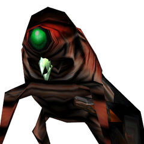
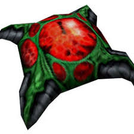
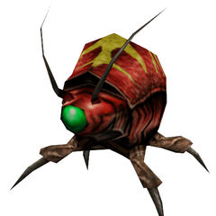
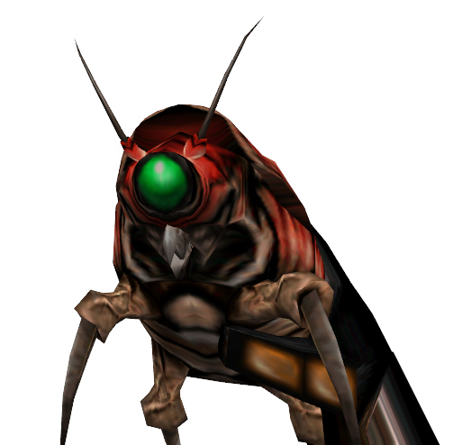
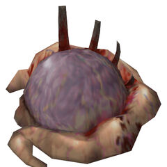

The Official Unofficial Fan and Activist Page!
Think about it. What is life without Snarks? These creatures give us to much joy, but Valve has neglected to include them in anything but the first game. We are extremely lucky to have them included in the expansions and Black Mesa.
So what is our goal? idk, we just need more Snarks. We need to request Snarks in everything. We need them in Project Borealis. We need them in HLVR. We need them as a Doom mod. We need them anywhere we can get them because we believe that Snarks are important. We need to re-establish Snarks as an icon of Halflife!
So what can you do? DEMAND THEM. We will NOT rest untill there are MORE SNARKS. Meme the Snarks. Make the Snarks known. Request them as features. Include them in mods. Build them in Minecraft. We shall start the Snark revolution.
Some early Snark concept art. This was taken from "Halflife 2: raising the bar", and shows us that the Snark's original name was the Squeak Grenade. There is also other information here, although it is hard to read. If someone can find a clearer version of this image, please email me at SuperQGS@gmail.com!
 The original Snark models. From left to right: Snark, Snark viewmodel, and Snark Nest. These were the snarks included in the original Halflife, Opposing Force, Blue Shift, and Decay
  The Snark models released in Gearbox's HD pack. These have the interesting addition of antennas on the Snarks and a bizzare and completely different look to the Snark nest. There was also a yellowish patch added to the Snark's back.
todo: add description
To show your support to the Snarks, make a Papercraft Snark!
Website